Every document. One app.
PDF, Word, Excel, CSV, JSON, XML and images — open instantly, offline. No ads, no sign-up.
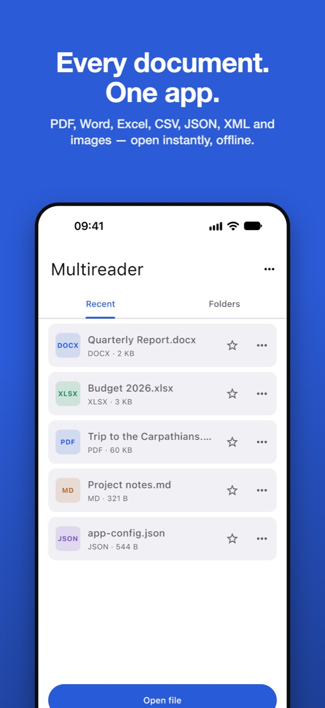
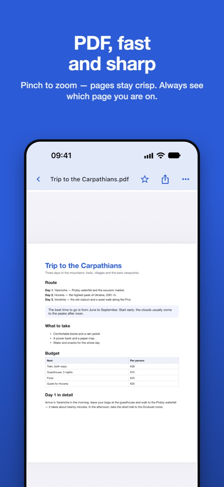
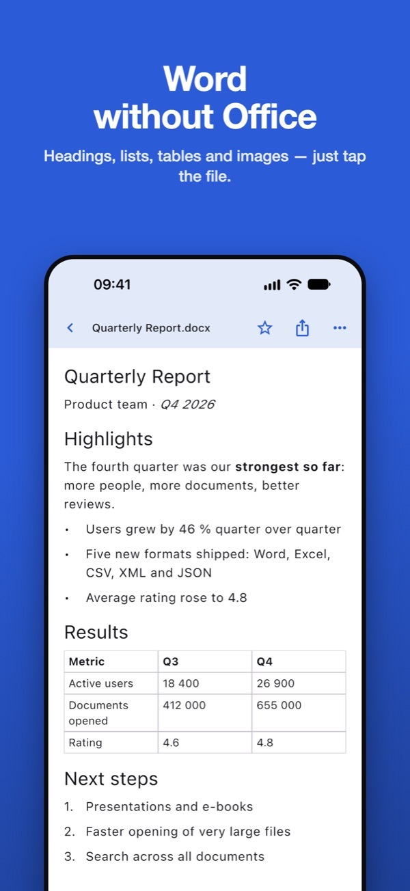
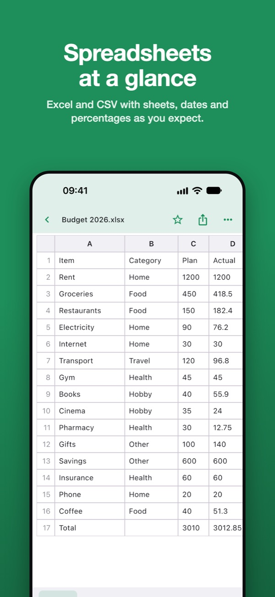
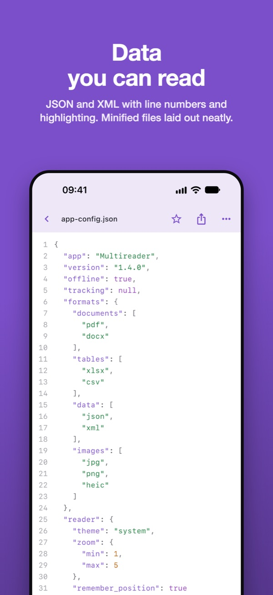
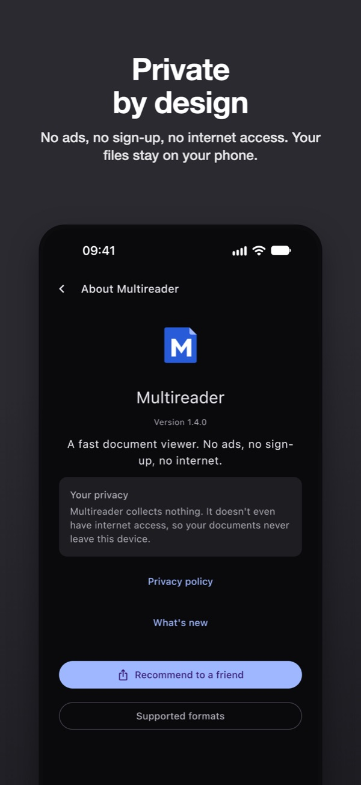
Opens what you get
Private by design
No ads, no sign-up, no internet access. Your files stay on your phone.
Privacy policy →Support
How do I open a file?
Tap a file in your file manager, mail, messenger or browser and choose Multireader. Or open Multireader and tap the open button.
Which formats are supported?
Documents: PDF and Word (.docx). Spreadsheets: Excel (.xlsx), CSV and TSV. Text: plain text, logs and Markdown. Data: JSON and XML. Images: JPG, PNG, HEIC, WebP and GIF. Other text files open as plain text; if a file is not supported, Multireader says so honestly.
Does Multireader send my documents anywhere?
No. Everything happens on your device. See the privacy policy.
Found a bug or have an idea?
Write to danutakiev@gmail.com. Please mention your device and the file type.
Усі документи. Один застосунок.
PDF, Word, Excel, CSV, JSON, XML і зображення — миттєво, без інтернету. Без реклами, без реєстрації.
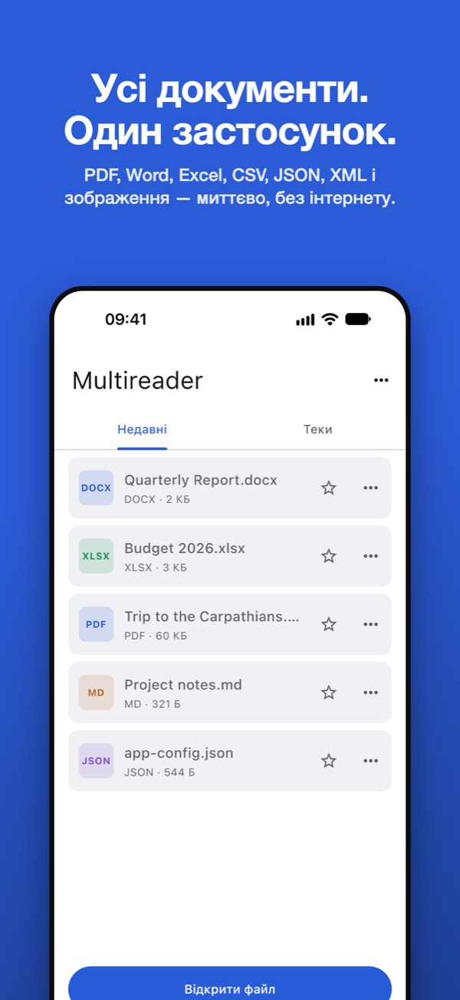
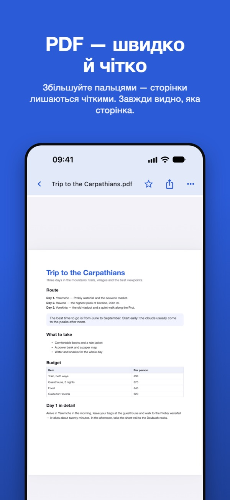
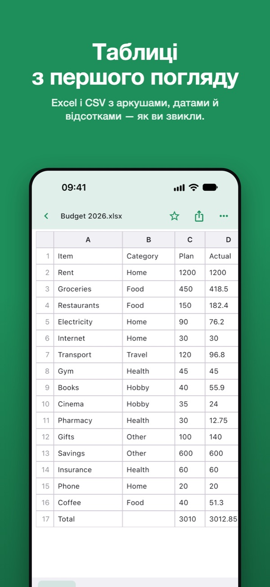
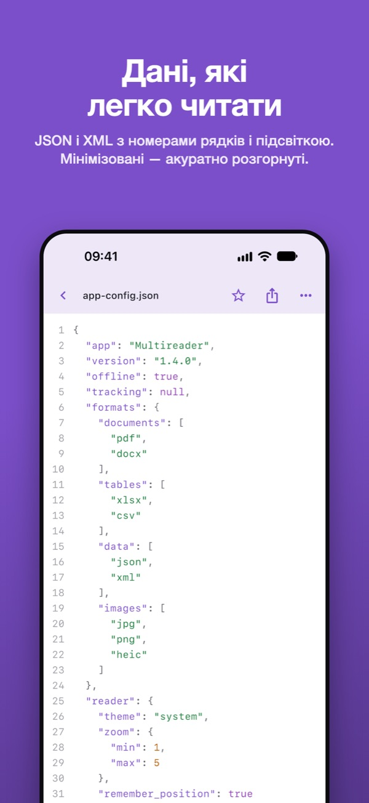
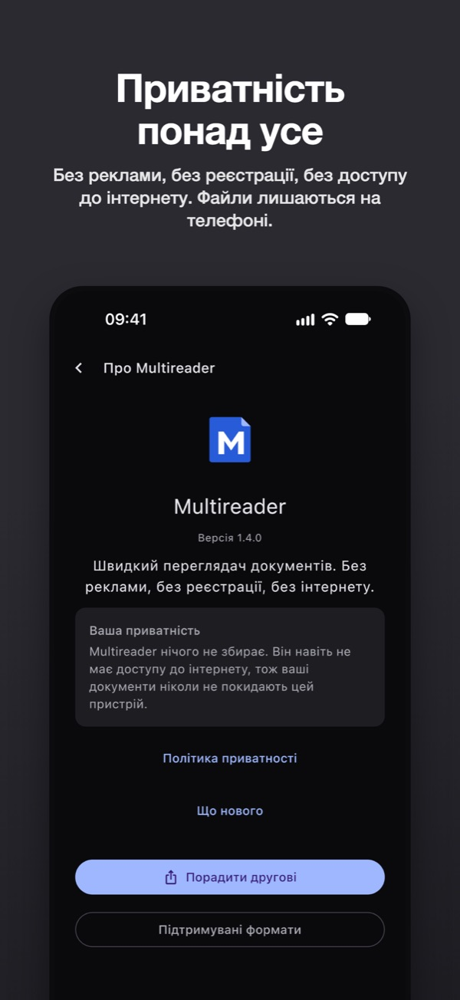
Відкриває те, що вам надсилають
Приватність понад усе
Без реклами, без реєстрації, без доступу до інтернету. Файли лишаються на телефоні.
Політика приватності →Підтримка
Як відкрити файл?
Торкніться файлу в менеджері файлів, пошті, месенджері чи браузері й виберіть Multireader. Або відкрийте Multireader і натисніть кнопку відкриття.
Які формати підтримуються?
Документи: PDF і Word (.docx). Таблиці: Excel (.xlsx), CSV і TSV. Текст: звичайний текст, логи й Markdown. Дані: JSON і XML. Зображення: JPG, PNG, HEIC, WebP і GIF. Інші текстові файли відкриваються як звичайний текст; якщо файл не підтримується, Multireader чесно про це скаже.
Чи надсилає Multireader мої документи кудись?
Ні. Усе відбувається на вашому пристрої. Див. політику приватності.
Знайшли помилку чи маєте ідею?
Напишіть на danutakiev@gmail.com. Вкажіть, будь ласка, пристрій і тип файлу.
Jedes Dokument. Eine App.
PDF, Word, Excel, CSV, JSON, XML und Bilder – sofort geöffnet, offline. Ohne Werbung, ohne Konto.
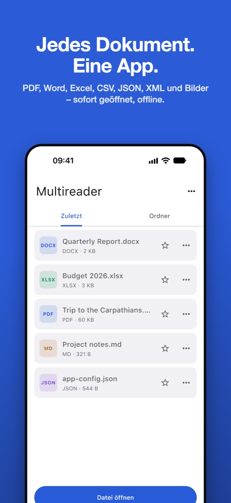
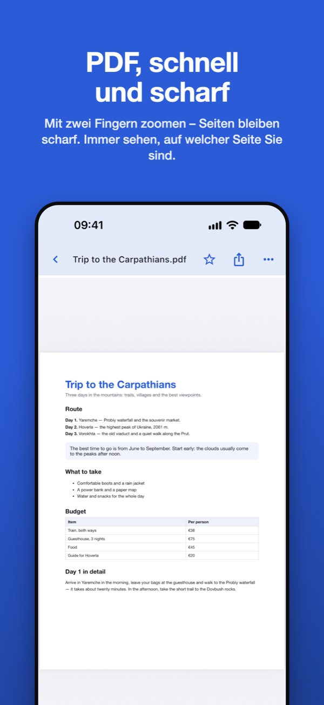
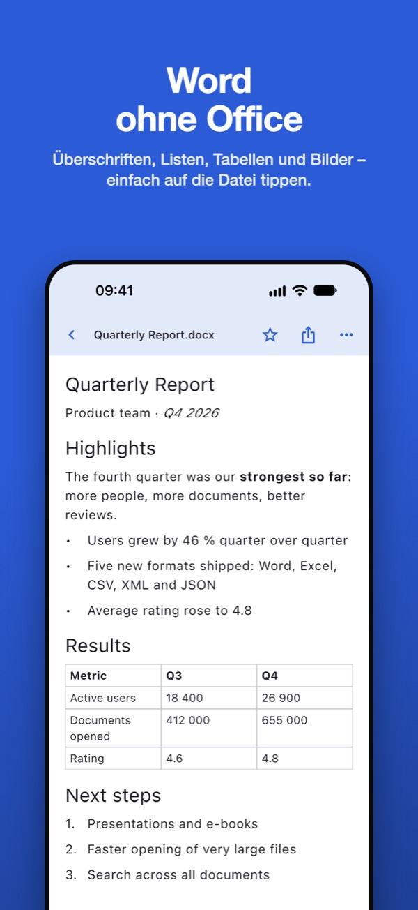
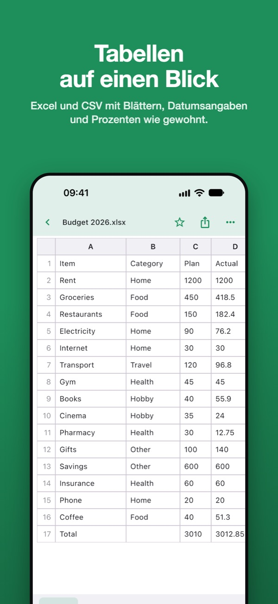
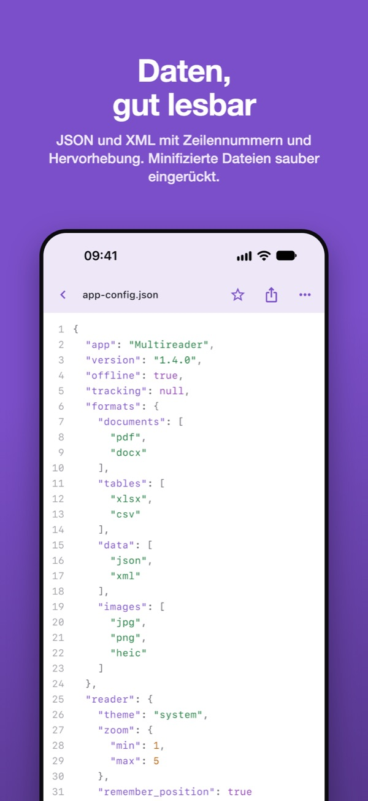
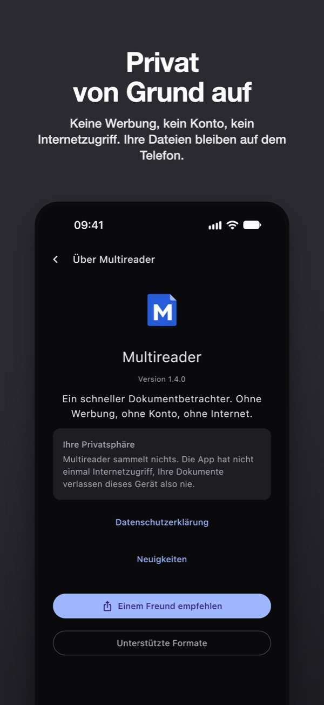
Öffnet, was Sie bekommen
Privat von Grund auf
Keine Werbung, kein Konto, kein Internetzugriff. Ihre Dateien bleiben auf dem Telefon.
Datenschutzerklärung →Support
Wie öffne ich eine Datei?
Tippe in deinem Dateimanager, in der Mail-App, im Messenger oder im Browser auf eine Datei und wähle Multireader. Oder öffne Multireader und tippe auf die Schaltfläche zum Öffnen.
Welche Formate werden unterstützt?
Dokumente: PDF und Word (.docx). Tabellen: Excel (.xlsx), CSV und TSV. Text: reiner Text, Logs und Markdown. Daten: JSON und XML. Bilder: JPG, PNG, HEIC, WebP und GIF. Andere Textdateien öffnen sich als reiner Text; wird eine Datei nicht unterstützt, sagt Multireader das ehrlich.
Sendet Multireader meine Dokumente irgendwohin?
Nein. Alles passiert auf deinem Gerät. Siehe Datenschutzerklärung.
Fehler gefunden oder eine Idee?
Schreib an danutakiev@gmail.com. Bitte nenne dein Gerät und den Dateityp.
Todos tus documentos. Una app.
PDF, Word, Excel, CSV, JSON, XML e imágenes: se abren al instante y sin conexión. Sin anuncios ni registro.
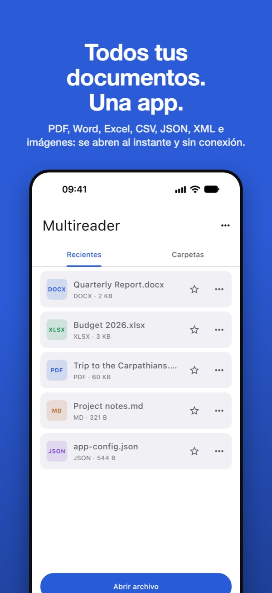
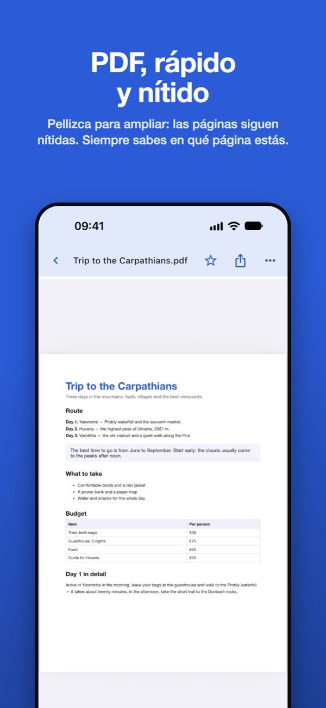
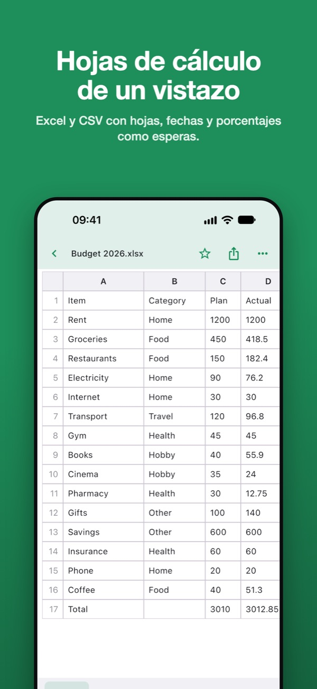
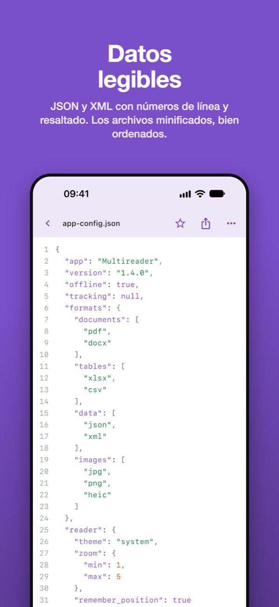
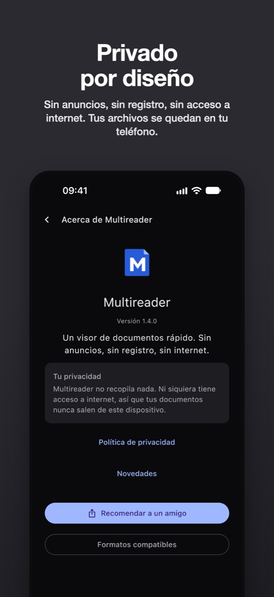
Abre lo que recibes
Privado por diseño
Sin anuncios, sin registro, sin acceso a internet. Tus archivos se quedan en tu teléfono.
Política de privacidad →Soporte
¿Cómo abro un archivo?
Toca un archivo en tu gestor de archivos, correo, mensajería o navegador y elige Multireader. O abre Multireader y toca el botón de abrir.
¿Qué formatos se admiten?
Documentos: PDF y Word (.docx). Hojas de cálculo: Excel (.xlsx), CSV y TSV. Texto: texto plano, registros y Markdown. Datos: JSON y XML. Imágenes: JPG, PNG, HEIC, WebP y GIF. Otros archivos de texto se abren como texto plano; si un archivo no se admite, Multireader te lo dice con honestidad.
¿Multireader envía mis documentos a algún sitio?
No. Todo ocurre en tu dispositivo. Consulta la política de privacidad.
¿Has encontrado un error o tienes una idea?
Escribe a danutakiev@gmail.com. Indica tu dispositivo y el tipo de archivo.
Tous vos documents. Une seule app.
PDF, Word, Excel, CSV, JSON, XML et images : ouverts instantanément, hors ligne. Sans pub, sans compte.
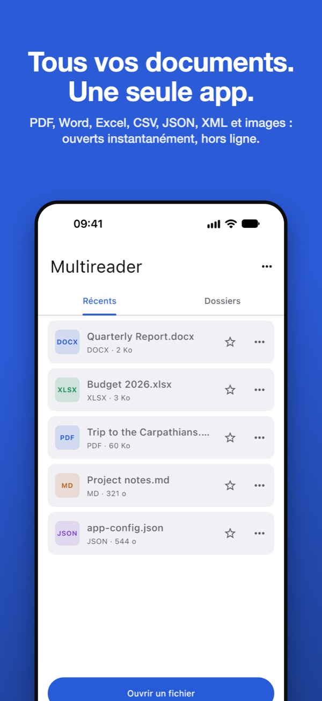
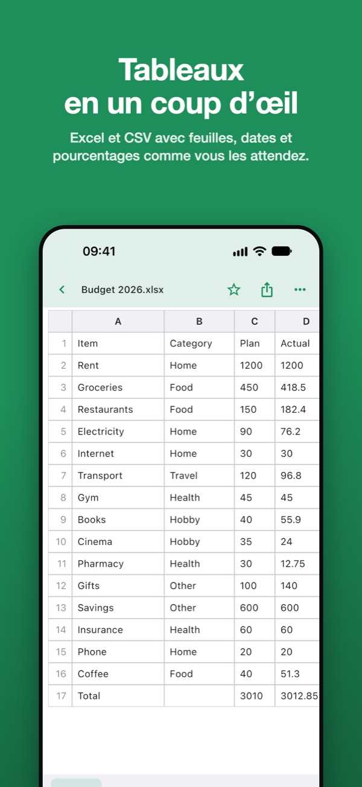
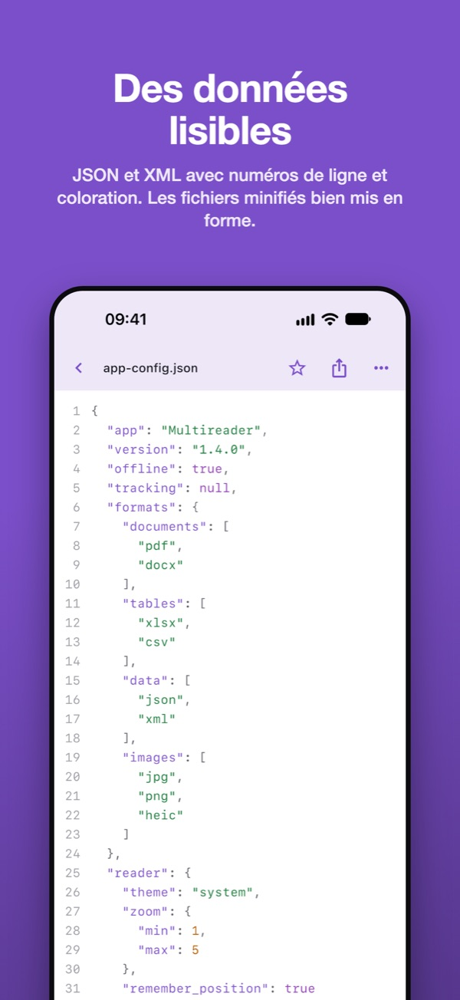
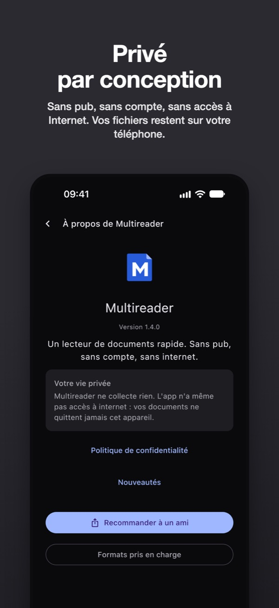
Ouvre ce que vous recevez
Privé par conception
Sans pub, sans compte, sans accès à Internet. Vos fichiers restent sur votre téléphone.
Politique de confidentialité →Assistance
Comment ouvrir un fichier ?
Touchez un fichier dans votre gestionnaire de fichiers, votre messagerie ou votre navigateur et choisissez Multireader. Ou ouvrez Multireader et touchez le bouton d’ouverture.
Quels formats sont pris en charge ?
Documents : PDF et Word (.docx). Feuilles de calcul : Excel (.xlsx), CSV et TSV. Texte : texte brut, journaux et Markdown. Données : JSON et XML. Images : JPG, PNG, HEIC, WebP et GIF. Les autres fichiers texte s’ouvrent en texte brut ; si un fichier n’est pas pris en charge, Multireader vous le dit franchement.
Multireader envoie-t-il mes documents quelque part ?
Non. Tout se passe sur votre appareil. Voir la politique de confidentialité.
Un bug ou une idée ?
Écrivez à danutakiev@gmail.com. Précisez votre appareil et le type de fichier.
Ogni documento. Una sola app.
PDF, Word, Excel, CSV, JSON, XML e immagini: si aprono subito, offline. Niente pubblicità, niente account.
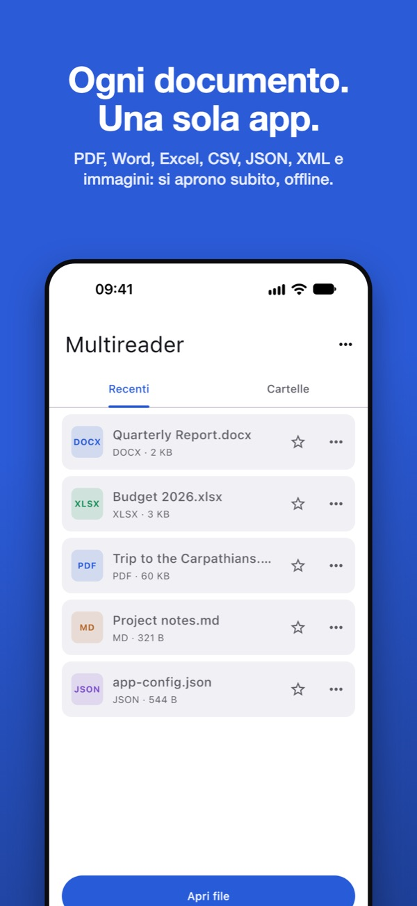
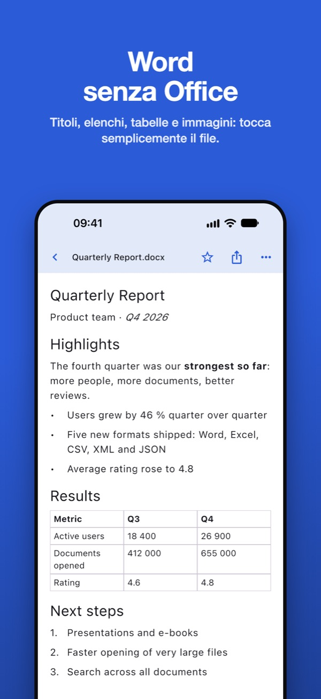
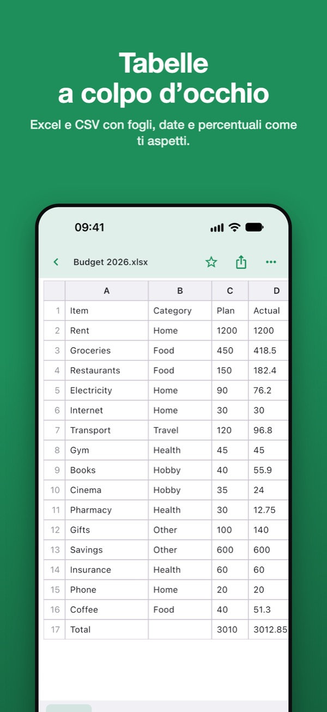
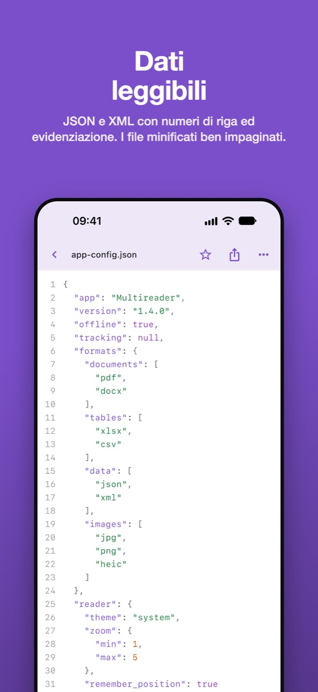
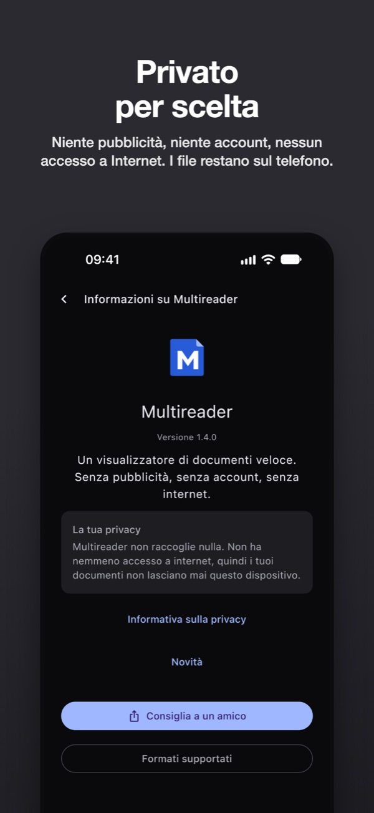
Apre quello che ricevi
Privato per scelta
Niente pubblicità, niente account, nessun accesso a Internet. I file restano sul telefono.
Informativa sulla privacy →Assistenza
Come apro un file?
Tocca un file nel gestore file, nella posta, nella chat o nel browser e scegli Multireader. Oppure apri Multireader e tocca il pulsante di apertura.
Quali formati sono supportati?
Documenti: PDF e Word (.docx). Fogli di calcolo: Excel (.xlsx), CSV e TSV. Testo: testo semplice, log e Markdown. Dati: JSON e XML. Immagini: JPG, PNG, HEIC, WebP e GIF. Gli altri file di testo si aprono come testo semplice; se un file non è supportato, Multireader lo dice onestamente.
Multireader invia i miei documenti da qualche parte?
No. Tutto avviene sul tuo dispositivo. Vedi l’informativa sulla privacy.
Hai trovato un bug o hai un’idea?
Scrivi a danutakiev@gmail.com. Indica il dispositivo e il tipo di file.
Każdy dokument. Jedna aplikacja.
PDF, Word, Excel, CSV, JSON, XML i obrazy — otwierane od razu, offline. Bez reklam, bez konta.
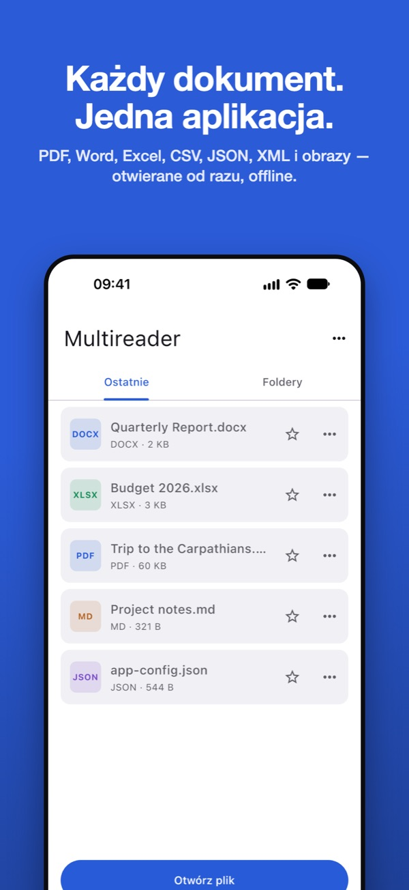
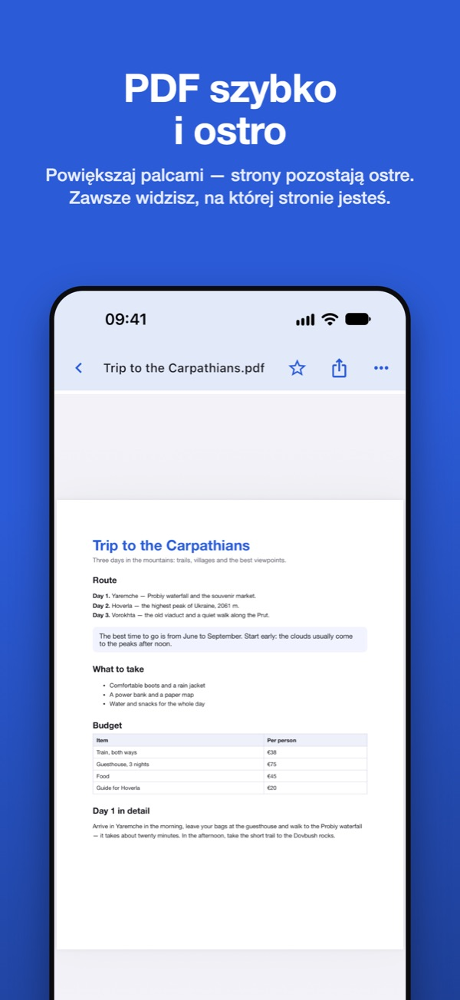
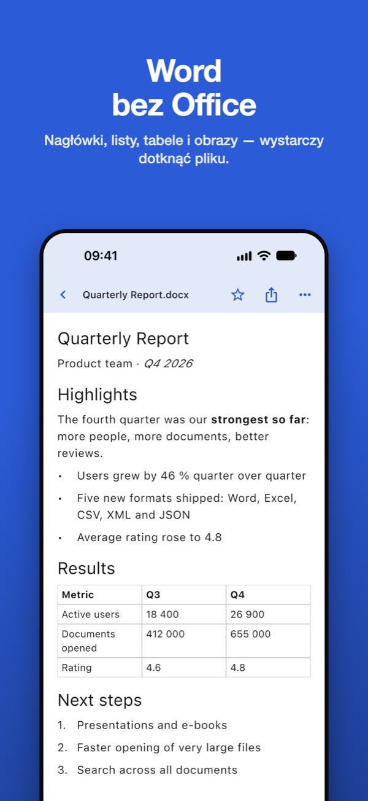
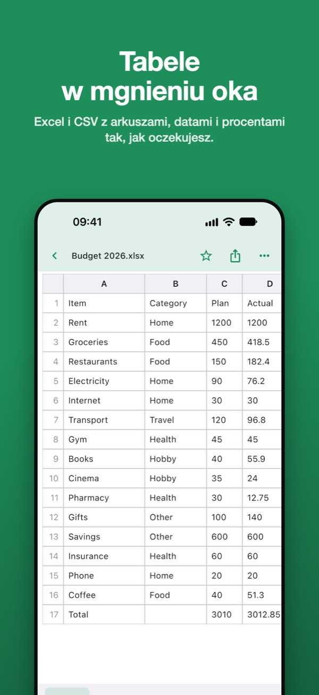
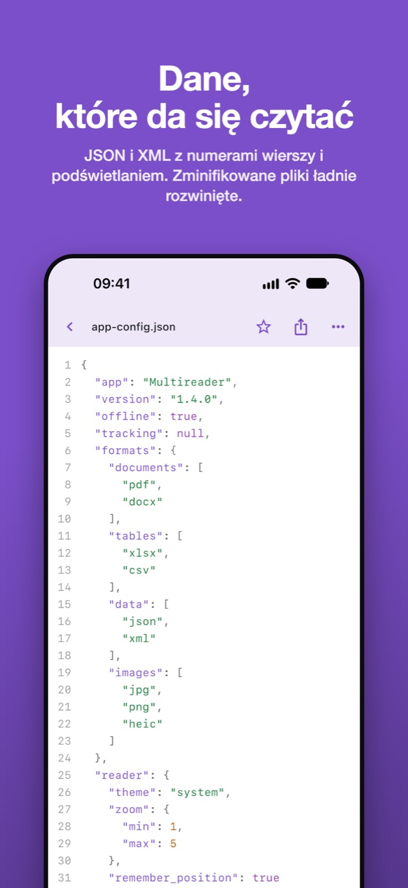
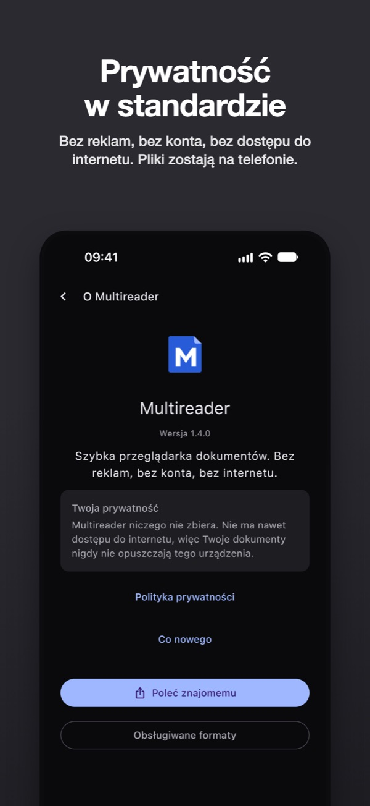
Otwiera to, co dostajesz
Prywatność w standardzie
Bez reklam, bez konta, bez dostępu do internetu. Pliki zostają na telefonie.
Polityka prywatności →Pomoc
Jak otworzyć plik?
Stuknij plik w menedżerze plików, poczcie, komunikatorze lub przeglądarce i wybierz Multireader. Albo otwórz Multireader i stuknij przycisk otwierania.
Jakie formaty są obsługiwane?
Dokumenty: PDF i Word (.docx). Arkusze: Excel (.xlsx), CSV i TSV. Tekst: zwykły tekst, logi i Markdown. Dane: JSON i XML. Obrazy: JPG, PNG, HEIC, WebP i GIF. Inne pliki tekstowe otwierają się jako zwykły tekst; jeśli plik nie jest obsługiwany, Multireader uczciwie to powie.
Czy Multireader gdzieś wysyła moje dokumenty?
Nie. Wszystko dzieje się na Twoim urządzeniu. Zobacz politykę prywatności.
Znalazłeś błąd lub masz pomysł?
Napisz na danutakiev@gmail.com. Podaj urządzenie i typ pliku.
Todo documento. Um só app.
PDF, Word, Excel, CSV, JSON, XML e imagens: abrem na hora, offline. Sem anúncios, sem cadastro.
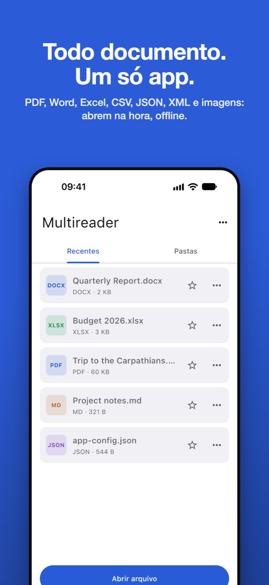
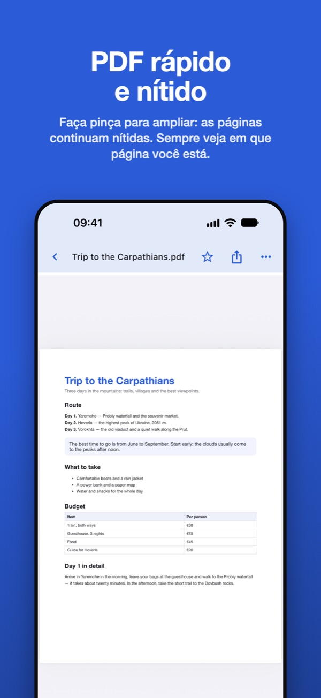
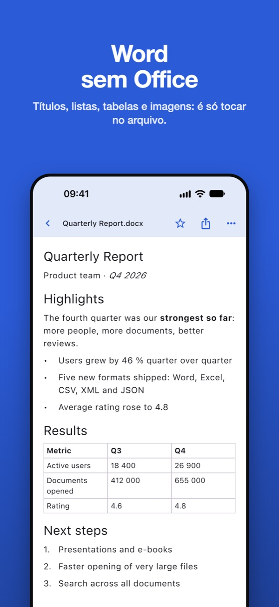
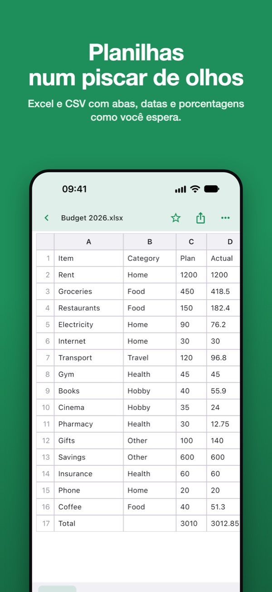
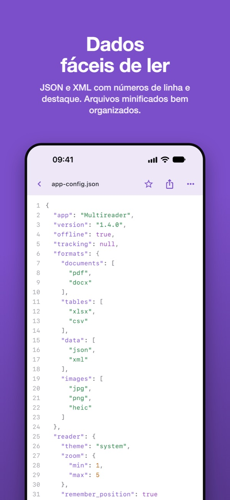
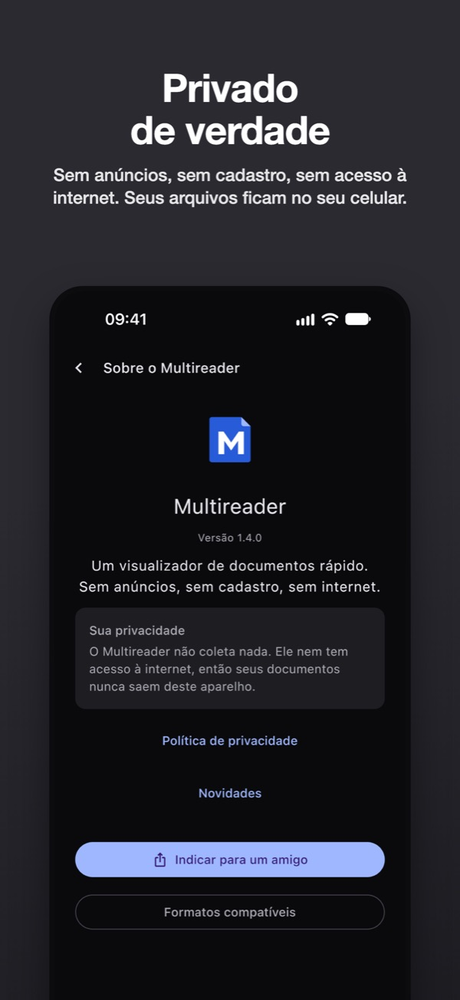
Abre o que você recebe
Privado de verdade
Sem anúncios, sem cadastro, sem acesso à internet. Seus arquivos ficam no seu celular.
Política de privacidade →Suporte
Como abro um arquivo?
Toque em um arquivo no gerenciador de arquivos, e-mail, mensageiro ou navegador e escolha o Multireader. Ou abra o Multireader e toque no botão de abrir.
Quais formatos são compatíveis?
Documentos: PDF e Word (.docx). Planilhas: Excel (.xlsx), CSV e TSV. Texto: texto simples, logs e Markdown. Dados: JSON e XML. Imagens: JPG, PNG, HEIC, WebP e GIF. Outros arquivos de texto abrem como texto simples; se um arquivo não for compatível, o Multireader avisa com honestidade.
O Multireader envia meus documentos para algum lugar?
Não. Tudo acontece no seu aparelho. Veja a política de privacidade.
Encontrou um erro ou tem uma ideia?
Escreva para danutakiev@gmail.com. Informe o aparelho e o tipo de arquivo.